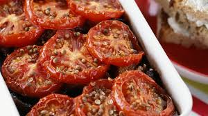

Inicio
Sobre mí
Recetas
Contacto
Otras Cosas
Tomates Gratinados

⏰
Tiempo total:
10 minutos
Ingredientes
6 tomates
40 g de pan rallado
40 g de mantequilla
1 diente de ajo
Perejil
Sal
Preparación
1.
Lave los tomates y cuézalos en el microondas durante 30 segundos. Retire, córtelos por la mitad y elimine las semillas.
2.
Triture finamente el ajo y dos cucharadas de perejil. Mézclelos con el pan rallado y la mantequilla ablandada.
3.
Salar los tomates y colóquelos en una fuente apta para microondas, ligeramente untada con mantequilla.
4.
Rellene los tomates con la mezcla y cocine en el microondas durante 5 minutos.
5.
Sirva los tomates gratinados calientes o fríos, según su preferencia.
Autor: Recetas Caseras
Consejos:
Añada un poco de queso parmesano rallado a la mezcla para un gratinado más sabroso.
Recetas